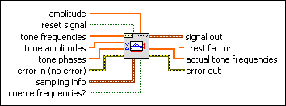
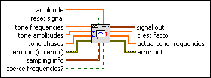
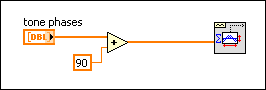

Multitone Generator VI
Owning Palette: Waveform Generation VIs
Requires: Full Development System
Generates a waveform that is the sum of integer cycle sine tones.

 Add to the block diagram Add to the block diagram |
 Find on the palette Find on the palette |
Owning Palette: Waveform Generation VIs
Requires: Full Development System
Generates a waveform that is the sum of integer cycle sine tones.

| Add to the block diagram |
Find on the palette |
 |
amplitude is the value that the sum of all the tones is scaled to and is the largest absolute value that the waveform contains. The default is –1. amplitude is useful when outputting the waveform to an analog output channel. If the maximum value that the hardware can output is 5 volts, set amplitude to 5. If amplitude  0, the scaling is not applied. 0, the scaling is not applied.
|
||||
 |
reset signal, if TRUE, resets the phase to the phase control value and the time stamp to zero. The default is FALSE. | ||||
 |
tone frequencies is an array in which each element is a single tone frequency. The size of this array must match the size of the tone amplitudes array and the size of the tone phases array. | ||||
|
tone amplitudes is an array in which each element is a single tone amplitude. The size of this array must match the size of the tone frequencies array and the size of the tone phases array. | ||||
|
tone phases is an array in which each element is a single tone phase in degrees. The size of this array must match the size of the tone frequencies array and the size of the tone amplitude array. | ||||
 |
error in describes error conditions that occur before this node runs. This input provides standard error in functionality. | ||||
 |
sampling info contains sampling information.
| ||||
|
If coerce frequencies? is TRUE, the specified tone frequencies will be coerced to the nearest multiple of Fs/n. | ||||
 |
signal out is the generated waveform. | ||||
 |
crest factor is the ratio of the Peak voltage to the RMS voltage of signal out. | ||||
 |
actual tone frequencies are the tone frequencies generated after accounting for coercion, if coerce frequencies? is TRUE, and the Nyquist criteria. | ||||
 |
error out contains error information. This output provides standard error out functionality. |
The frequency domain representation of this waveform is a sequence of impulses at the specified tone frequencies and zero at all other frequencies. The number of tones is determined by the size of the array inputs tone frequencies, tone amplitudes, and tone phases. The sine tones are generated using the frequency, phase, amplitude, and samples information. This raw array then is scaled so the largest absolute value is equal to amplitude. Finally, the waveform is bundled. The X0 element of the waveform always is set equal to 0 and the delta X element is set equal to 1/Fs.
LabVIEW assumes tone phases to be referenced to the sine function. To reference tone phases to the cosine function, add 90 degrees. Be aware that this may change the crest factor. The following code excerpt shows how to reference tone phases to the cosine function:

Refer to the following VIs for examples of using the Multitone Generator VI:
 Open example Find related examples
Open example Find related examples
Open example Find related examples